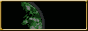

Welcome! I'm zzuf.
This is a website I made for fun, in an
attempt to emulate old Web 1.0 sites.
You might find useful stuff
here in the future though!
PGM PvP Maps
You can find a complete repository of all the maps I've made for PGM, as well as some extra XMLs (for maps like 2013's Pizza Spleef), by visiting this link!
PGM Bridge Gamemode Documentation
You can find useful documentation on my implementation of
The Bridge in PGM by visiting this link!
PGM Item Sumo Gamemode Documentation
You can find useful documentation on my
Item Sumo PGM gamemode by visiting this link!
Random stuff
My attempt at recreating the OP cape that most members of the Project Ares team wore during the Project Ares vs HungerCraft tournament. Not perfect, but I believe I got close enough!


© zzuf


